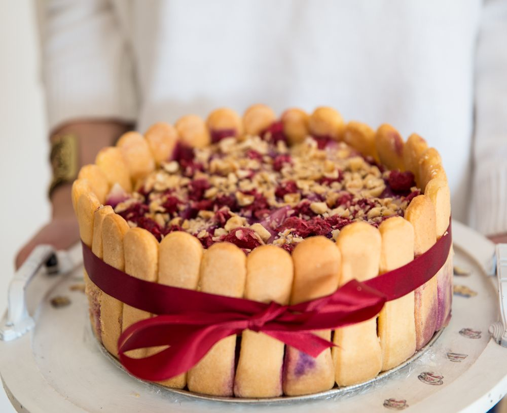
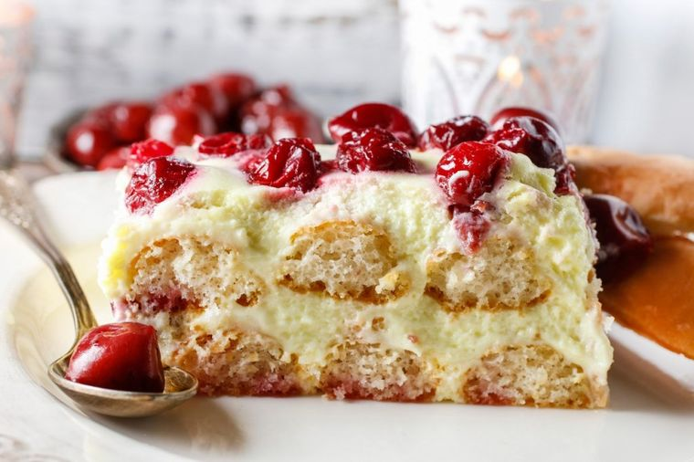

Recept za tortu sa piškotama i voćem


Potrebni sastojci:
- 360 g pavlake
- 180 g Šlag krema
- 3 pakovanja piškota
- 500 g voća po izboru: maline, višnje, jagode, mix šumskog voća...
- mleko
Priprema:
- Umutite krem šlag po receptu sa kesice
- U krem šlag dodajte pavlaku i sve zajedno pomešajte da se sjedini
- Na većoj tacni poslažite piškote koje prvo treba da umočite u mleko
- Premazati piškote četvrtinom fila, pa preko staviti pola mere voća, malo ih rukom utisnuti pa premazati opet četvrtinu fila.
- Ponovite postupak, umočite piškote u mleko poređajte ih namažite fil dodajte voće pa fil piškote i na kraju premazati sve filom
- Ostavite tortu da malo odstoji u frižideru da bi se piškote opustile
- Tortu možete dekorisati po želji
PRIJATNO
VRH